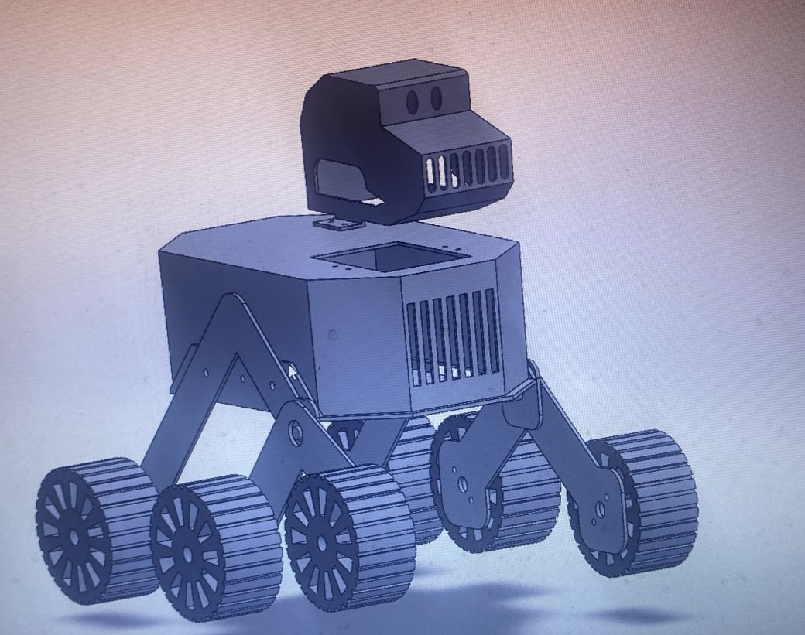
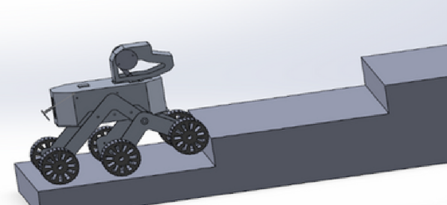
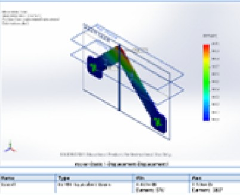
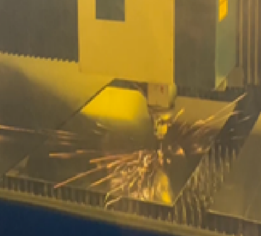
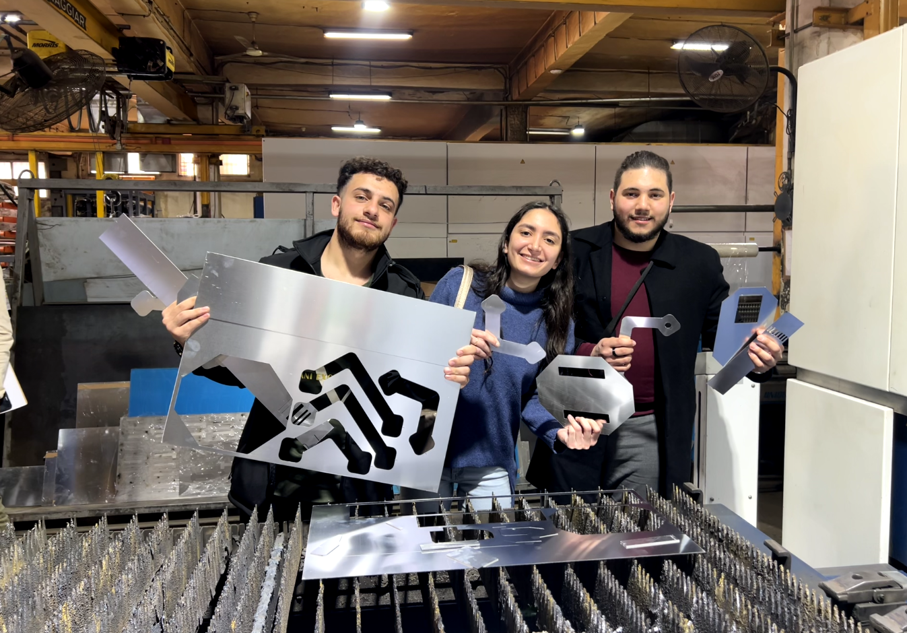
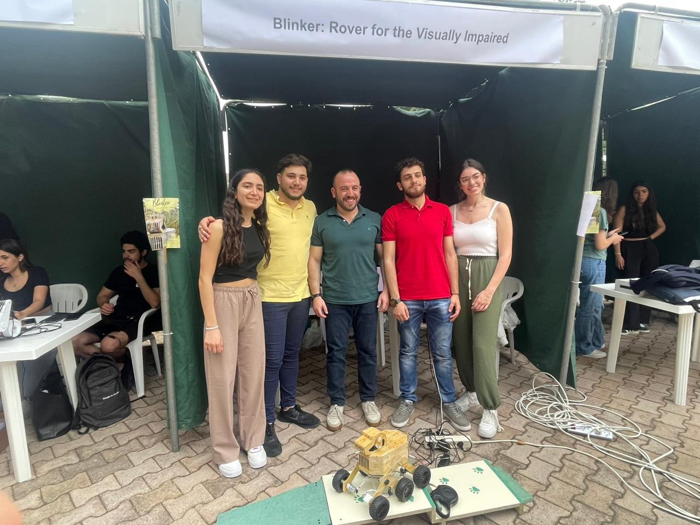
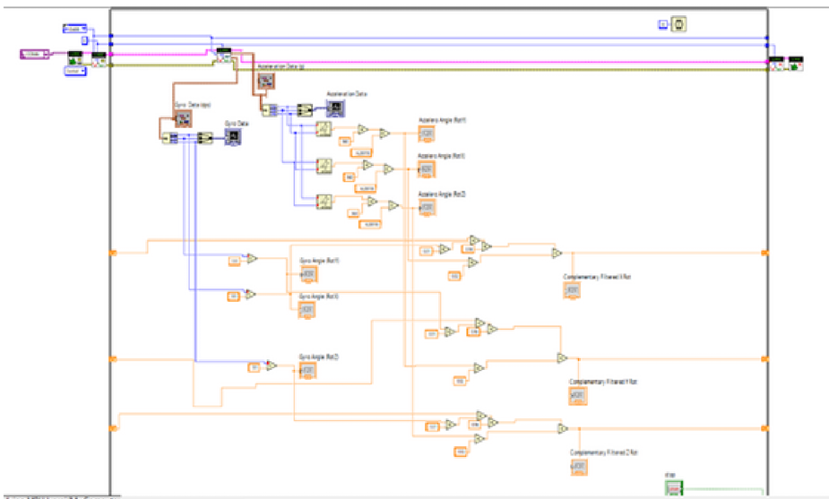
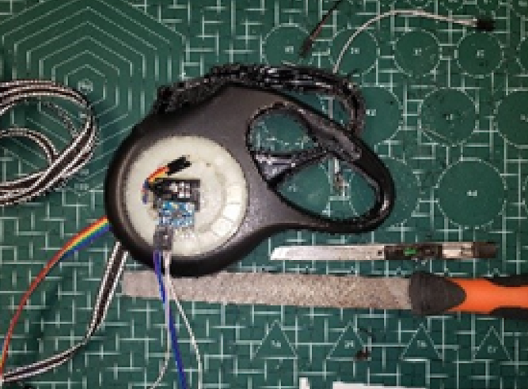

Campus navigation
Demonstration footage of the rover navigating a campus environment.
ASSISTIVE ROBOTICS · ENGINEERING DAY · APRIL 2024
BLINKER is a six-wheel assistive rover developed to help visually impaired individuals navigate familiar university environments. It combines mechanical design, obstacle detection, embedded control, and a leash-based directional interface to support mobility and spatial awareness.

THE PHYSICAL PROTOTYPE
The project was inspired by the mobility challenges experienced by visually impaired students navigating a university campus. The team developed BLINKER as a robotic assistant concept intended to detect obstacles and provide directional guidance.
The rover was presented during the university's Engineering Day, demonstrating a multidisciplinary approach to accessibility-focused engineering.
The project was inspired by the experience of assisting visually impaired colleagues during their first experiences navigating the university campus. This highlighted the importance of independent mobility, accessibility, confidence, and inclusion in educational environments.
BLINKER was conceived as a service-dog-like rover for familiar campus routes. Its intended functions included detecting obstacles, distinguishing potential stair hazards, and interpreting directional input from the user through a leash.
The rover's mechanical structure was developed in SolidWorks, with attention to chassis geometry, component arrangement, wheel configuration, and the ability to negotiate changes in terrain.
The design process included stair-climbing considerations and mechanical analysis to investigate structural behavior and rover motion.

The CAD model defines the main chassis, wheel arrangement, upper sensor housing, and supporting mechanical structure.
Mechanical design was developed alongside component integration and manufacturing considerations.

The motion simulation illustrates the rover's wheel and chassis geometry while negotiating a step.
The stair-climbing concept was a key mechanical design consideration because the rover was intended to operate across campus pathways and changes in elevation.

The engineering analysis supported investigation of the mechanical component under its modeled loading conditions.
Specific stress, deformation, or safety-factor values should be reported only after checking the original simulation results and settings.
After the mechanical design stage, the team fabricated and assembled the prototype using laser cutting, 3D printing, and manual workshop processes including cutting, bending, drilling, and mechanical assembly.
This stage translated the CAD concept into a physical rover and required coordination between the mechanical structure, wheel assemblies, sensor mounts, and electronic components.

Laser cutting was part of the manufacturing workflow used to produce structural parts. Additional manual fabrication and assembly were required to integrate the rover.

The fabrication stage involved producing and assembling the structural components needed to bring the rover design to life.
The project required a multidisciplinary team to coordinate design, fabrication, electronics, and software integration.

The completed prototype was presented at Lebanese American University's Engineering Day event. The project proposal records the team's participation in the university exhibition.
The documented electrical architecture included NI myRIO, an Arduino board, six DC motors with encoders, infrared sensors, H-bridge motor drivers, and a buzzer.
The upper and lower infrared sensors were positioned to detect different environmental hazards. The control logic used sensor readings to help determine whether the rover should continue, turn, or stop.

NI myRIO and LabVIEW were used in the embedded control system. Motor actuation, sensor feedback, and directional inputs were brought together to coordinate rover behavior.
The control logic organizes rover behavior into states such as idle, forward, backward, left, right, brake, and off.
Sensor conditions determine whether a requested movement can proceed or whether the rover must respond to a detected obstacle.
BLINKER uses a leash-based interface to allow directional input while maintaining a controlled distance between the user and the rover.
An encoder tracks leash rotation and helps estimate how much leash has been extended. An inertial measurement unit provides inclination-related information used to interpret the user's directional intent.

The leash interface provides an alternative to conventional joystick-style input. Its encoder and IMU-related logic were designed to translate leash movement into directional commands.
This interface was intended to support a more natural interaction between the user and the assistive rover.
The following recordings document the rover's development, navigation trials, stair testing, and manufacturing activities.
Demonstration footage of the rover navigating a campus environment.
Footage documenting the rover's stair-related mobility testing.
Earlier testing footage documenting the prototype development process.
Additional footage of the rover during stair-related trials.
Footage documenting aspects of the manufacturing and design process.
Manufacturing footage from the fabrication stage.
The infrared sensing range was approximately 20 cm, and performance could be affected by direct sunlight and elevated temperatures.
The rover required a chassis and wheel configuration designed to support balance and stair-related mobility.
Sensor readings, motor commands, and leash-based directional inputs had to be coordinated within the control system.
I contributed across the project's mechanical, electronic, and software development workflow, working with a multidisciplinary team to deliver the physical rover prototype.
Contributed to SolidWorks modeling, chassis development, component arrangement, and mechanical considerations for stair-climbing capability.
Participated in laser cutting, 3D printing, manual cutting, bending, drilling, and assembly of the rover structure.
Integrated infrared sensors into the obstacle-detection workflow.
Developed the NI myRIO and LabVIEW-based control system, integrating sensors, motor actuation, and feedback.
Designed and implemented the leash-based directional mechanism using an encoder and IMU-related measurements.
Worked with teammates to integrate mechanical, electronic, and software components into a functional prototype.
BLINKER brought together mechanical fabrication, embedded control, obstacle sensing, and directional guidance in an assistive robotics prototype presented during Engineering Day at Lebanese American University.
The project demonstrates how multidisciplinary engineering can address accessibility challenges and explore new approaches to independent mobility in familiar educational environments.